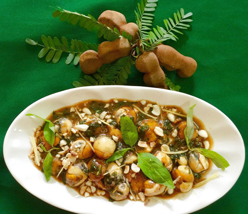

Trứng cút lộn xào me - món ăn đường phố "chất phát ngất" ở Hà thành
Trứng cút lộn được bao bọc bởi lớp sốt đặc sệt, sóng sánh ngấm đượm vị sốt chua chua, ngọt ngọt, mặn mặn, cay cay... chính là một sự kết hợp hương vị vô cùng tuyệt vời mà giới trẻ Hà thành thích thú.
Giới trẻ Hà thành có lẽ không còn xa lạ với món trứng cút lộn xào me - một món ăn đường phố có mặt ở hầu hết các quán ốc nổi tiếng ở Hà Nội.
Cút lộn xào me có nguồn gốc từ miền Nam nhưng khi du nhập vào Hà Nội đã đốn tim giới trẻ bởi sự kết kết hợp rất thú vị giữa vị chua của me, ngọt của đường và trứng cút lộn. Ghé qua bất kỳ quán ốc nào, bạn dễ dàng tìm thấy món ăn này và được chế biến vô cùng đơn giản.
Trứng cút lộn xào me - món ăn đường phố "chất phát ngất" ở Hà thành
Trứng cút khi nguội thì bóc vỏ, chú ý thật nhẹ tay sao cho trứng khỏi vỡ. Sau đó cho trứng vào chiên sơ cho thơm, cho trứng ra đĩa để riêng. Ngâm me trong nước nóng khoảng 5 phút, sau đó dùng thìa dằm nhuyễn, cho qua rây, lọc lấy phần nước và thịt me, loại bỏ phần xác. Đậu phộng rang chín, bóc vỏ, cho vào cối giã giập một chút. Rau răm được rửa sạch, để ráo, xắt nhỏ.
Sau khi chiên trứng sơ qua, người ta cho hành củ đã bằm nhỏ ở trên vào phi thơm. Tiếp đó cho nước me, nước mắm, đường, nước cốt dừa, ớt vào đảo kỹ cho đến khi nước sốt sánh lại, nêm nếm vừa miệng. Chính tay nghề pha chế các gia vị này của các đầu bếp sẽ mang lại những vị khác nhau và làm nên hồn cốt của món ăn này.
Người đầu bếp sẽ dựa vào kinh nghiệm để chế biến, sao cho có sự hòa quyện giữa vị ngọt của đường, chút mằn mặn của muối và độ chua vừa đủ sao cho món ăn đậm đà. Món ăn này thiếu đi hương vị nếu không có rau răm.

Nếu như người miền Nam ăn ngọt hơn thì khi món này du nhập vào Hà Nội, người đầu bếp đã giảm bớt vị ngọt, vị chua cho phù hợp với khẩu vị, chính vì vậy mà trứng cút lộn xào me rất dễ ăn, ai từng thưởng thức một lần sẽ muốn thưởng thức lần hai bởi món ăn này rất dễ gây "thương nhớ".
Thường khi ăn cút lộn xào me, người ta thường ăn kèm với bánh mì bởi ăn với nước sốt rất ngon, đậm vị.
Trứng cút nhỏ, được bao bọc bởi lớp sốt đặc sệt, sóng sánh ngấm đượm vị sốt chua chua, ngọt ngọt, mặn mặn, cay cay... chính là một sự kết hợp hương vị vô cùng tuyệt vời. Không chỉ thế, lớp lạc rang bùi bùi và hành khô thơm lừng sẽ tạo nên sức hấp dẫn không thể chối từ.